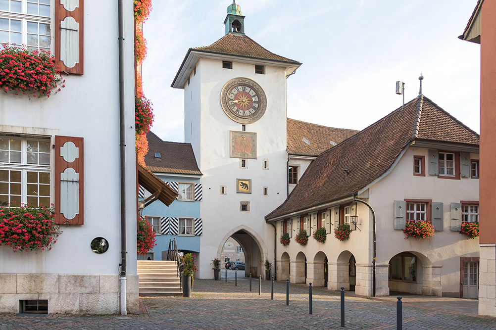

Laufen erzählt Geschichte
Konzept, Gestaltung und Umsetzung
In Form eines kulturhistorischen Audiorunganges war es das Ziel,
die Geschichte der Stadt Laufen für Interressierte erlebbar
zu machen.
Technische Daten Gläser:
10 Gläser, von hinten bedruckt, an der Wand montiert
Glasdurchmesser: 38 cm
Technische Daten Flyer:
Format: 105 x 210 mm
Falz: Zickzackfalz
Druck: cmyk, beidseitig
